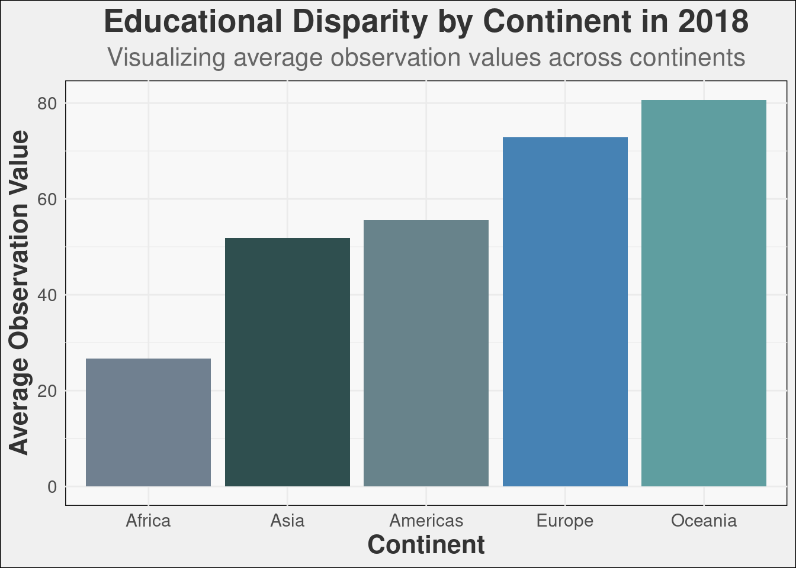

1 Introduction
The Educational Disaprity report gives an extensive overview of educational systems across different continents, using a wide range of data visualization methods to reveal hidden patterns and disparities in education outcomes. It examines various metrics such as literacy rates, school enrollment numbers and levels of educational attainment for a better insight into the intricate dynamics that shape global education.
This analysis offers profound insights into socio-economic and policy environments that influence educational landscapes worldwide. It is a comprehensive guide for policy makers, academic institutions, and international organizations with an aim of making informed decisions that can improve education opportunities and quality for different populations across continents.
1.1 Purpose
The primary aim of this report is to:
- Identify key trends in education globally.
- Analyze disparities in educational outcomes across different geographical regions.
- Explore the relationships between educational levels, economic conditions, and life expectancy.
1.2 Methodology
Our methodology encompasses:
- Mapping global educational data to visually represent geographical disparities.
- Comparative analysis by continent to highlight differences and similarities in educational outcomes.
- Time series analysis to trace the evolution of education over recent years.
- Statistical modeling to examine the correlations between education, GDP, and life expectancy.
2 Analysis of Global Educational Disparities
2.1 Educational Proficiency Across Continents
Our analysis highlights significant disparities in educational outcomes across different continents, with a particular focus on the proficiency levels in reading at the end of lower secondary education. The visualization below illustrates that many countries in Africa have the lowest percentage of students achieving at least a minimum proficiency level in reading, starkly contrasting with countries in Europe, Asia, and North America, where a relatively high percentage of students meet or exceed this educational threshold.
This disparity points to systemic issues that may include but are not limited to, resource allocation, educational policies, and socio-economic factors that impact educational systems across the globe.
2.2 Trends of Educational Outcomes
2.2.1 Regional Comparison

This bar chart provides a clear visualization of the disparities in educational outcomes across different continents as of the latest data point. The chart highlights the variance in educational achievements, which can be attributed to a multitude of socio-economic factors unique to each continent. Notice the stark differences between continents such as Africa compared to North America and Asia.
2.2.2 Time Series Analysis: Educational Trends by Continent
Varied trends in educational outcomes across continents have been revealed by the time series graph provided below, indicating significant disparities in transition rates from primary to secondary and tertiary education. Notably, no significant improvement or a slight decline in educational outcomes has been experienced in Africa and Europe. This is largely attributed to limited household incomes, which directly impact children’s access to educational opportunities. Additionally, efforts to create equal access to quality education across these regions are hampered by inadequate government investment in education infrastructure.
In contrast, a positive trend has been shown in the Americas, where educational outcomes are on the rise. This improvement suggests that more effective educational policies and investments have been implemented compared to other regions. However, the southern regions of asia have faced a deline. This decline highlights critical vulnerabilities in the region’s educational framework, including economic instabilities and uneven distribution of educational resources, which necessitate urgent attention and strategic policy interventions to reverse the negative trends.

2.3 Correlation Analysis: Education, GDP, and Life Expectancy


Numerous studies have indicated a positive link between education and GDP, as well as between GDP and life expectancy. Such correlations reiterate the weight of education levels attained and economic performance on national health and life expectancies. It has been observed that increased education leads to better economic outcomes, which subsequently result in improved life quality standards and longer-living populations.
Another important way in which education affects the level of income, is by determining who gets what part of the resources. This is influenced through direct financial benefits such as salary increments or promotions, but also through social gains like higher productivity rates and more invention. When considering health factors, there has been a positive trend among some countries where income levels rise with educational attainment. Consequently, regions with higher GDP per capita have experienced increased longevity due to healthy living resulting from better educational systems.
This can also be seen in economies that place high premium on education. In this regard, economies experiencing higher GDP growth tend to have better healthcare services leading to improved living conditions as well as public health outcomes (World Bank). Scatter charts show that regions that invest more in schooling not only enjoy increased GDP figures but also longest average lifespan.
3 Conclusion and Recommendations
3.1 Conclusion
This report has provided a comprehensive analysis of global educational trends using world maps, bar charts, time series as well as scatter charts among others. According to these visualizations, there are significant differences in education, GDP, and life expectancy on different continents.
The world map indicated striking regional discrepancies in educational achievements stressing the problems faced by Africa and some parts of southern Asia. On the other hand, the bar chart showed notable disparities among continents where regions such as Africa, Europe, the Americas or Asia seemed to have experienced challenges or improvements concerning their educational outcomes at different times.
Time series demonstrated static/downturns in Europe & Africa while America witnessed an upturn & Asia suffered massive depreciation particularly in Southern regions. These patterns show how economics interacts with education.
Finally, correlation scatter charts highlighted positive associations amid education rates vis-à-vis GDP together with life span. As well as emphasizing the critical role played by education towards better income and health outcomes at society level; these charts further showed that high prevalence is associated with better living standards.
3.2 Recommendations
Based on findings from this study; hereby suggested recommendations can help tackle the identified challenges while making use of the available opportunities:
Increase Governmental and Private Investment in Education: Especially where shortcomings are noted in certain regions, to guarantee equal access to education.
Improve Educational Infrastructure: Better school facilities and resources should be available for better results in education and hence higher growth rates of the economy.
Targeted Implementation of Educational Programs: For instance, in some cases like Southern Asia, a region that has significant inconsistencies or regressions demand educational initiatives that target specific local communities.
Policy Cohesion between Education and Economic Development: Policies must encourage the linkages between education and economic development objectives to ensure that enhanced learning is translated into economic and health gains.
Adaptation through Monitoring of Education Strategies: Continuously monitor educational outcomes while ensuring strategies are effective and responsive to changing socio-economic conditions.
It is about investing on the future generation. All countries need to invest proactively and strategically in their education systems, so as to promote global economic growth prospects including enhancing public health worldwide.